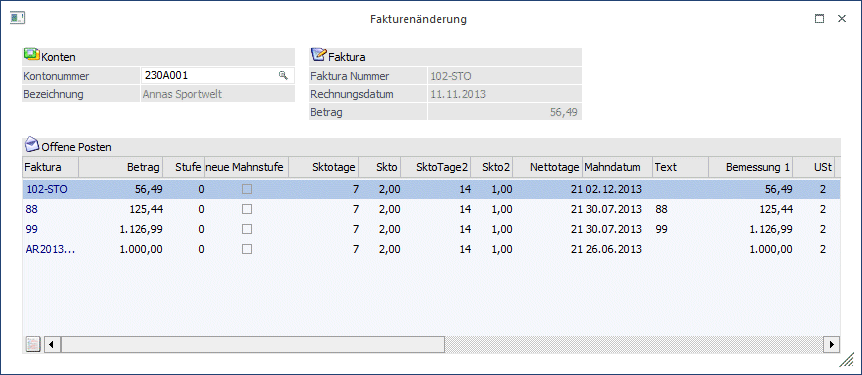

Im Menüpunkt
1 Buchen
1 Fakturenänderung
oder Schnellaufruf
1 STRG + F
können bestehenden Fakturen noch berichtigt werden:

Kontonummer
Geben Sie im Feld KontoNr. die Nummer des gewünschten Debitoren / Kreditoren ein.
Es werden alle Fakturen des Debitors/Kreditors in einem Fenster angezeigt. Dort können folgende Eingabefelder bearbeitet werden:
Stufe
Mahnstufe, in der sich die jeweilige Faktura zurzeit befindet
Ø neue Mahnstufe
Wird direkt aus der Mahnung in die Fakturenänderung gewechselt, wird hier angezeigt, ob mit der letzten Mahnvorbereitung eine neue Mahnstufe vorgeschlagen wurde. Die entsprechende Mahnung wurde aber zu diesem Zeitpunkt noch nicht gedruckt und kann noch editiert werden (dafür muss aber die Checkbox "neue Mahnstufe" deaktiviert werden). Für alle Fakturen mit aktivierter Checkbox wird beim Originaldruck der Mahnung die nächste Mahnstufe gespeichert. Wird die Checkbox deaktiviert erfolgt keine Erhöhung (bzw. Veränderung) der Mahnstufe; es sie denn, in der Spalte "Stufe" wird die Mahnstufe manuell verändert.
Ø Skontoprozent (1 und 2)
Prozentsatz, der bei Zahlung innerhalb der Skontofrist angerechnet wird.
Ø Skontotage (1 und 2)
Frist, innerhalb welcher sich der Debitor vom Zahlungsbetrag einen bestimmten Prozentsatz abziehen darf.
Ø Nettotage
Zahlungsziel, in Tagen, ab Valutadatum
Ø Mahndatum
Hier wird angezeigt, wann die Mahnung fällig ist bzw. wann sie das letzte Mal gemahnt wurde.
Ø Text
OP-Text. Es kann mit der F9-Taste die Fakturennotiz editiert werden oder eine neue Notiz erstellt werden. Dafür muss zuvor der Focus aber in das Feld Text gestellt werden.
Ø Bemessungsgrundlagen und USt-Zeile 1 - 3
Pro Faktura können bis zu 3 Bemessungsgrundlagen mit den dazugehörigen Steuerzeilen aus dem Unternehmensstamm gemerkt werden. Diese Bemessungsgrundlagen bilden die Basis für die Berechnung und die richtige Aufteilung des Skontos auf die entsprechenden Skontoautomatikkonten.
Ø Kennz.
Hier kann nachträglich das Zahlungskennzeichen pro Fakturenzeile geändert werden.
Ø Kostenträger
Pro Faktura kann eine Kostenträgernummer nachträglich eingegeben oder korrigiert werden.
Ø FW / FW-Betrag
Diese Felder sind nicht editierbar.
Ø Projektnummer
Hier kann nachträglich noch die Projektnummer eingegeben oder editiert werden.
Ø Bankverbindung
Hier wird die Bankverbindung angezeigt, die beim Buchen der Faktura für diesen OP ausgewählt wurde. Per Doppelklick auf die Bankverbindung kann eine andere Bankverbindung aus den "weiteren Bankverbindungen", die im Personenkonto hinterlegt wurden, ausgewählt werden.
Hinweise
Der Menüpunkt "Fakturenänderung" kann nicht nur im aktuellen (höchsten) Wirtschaftsjahr aufgerufen, sondern auch in Vorjahren. Dabei werden in der Tabelle nur jene Offenen Posten angezeigt, die bis zum ausgewählten Wirtschaftsjahr erzeugt wurden; jedoch keine OPs aus Folgejahren.
Die Menüpunkte "Fakturenänderung" und "Buchungen bearbeiten" können nicht gleichzeitig verwendet werden.